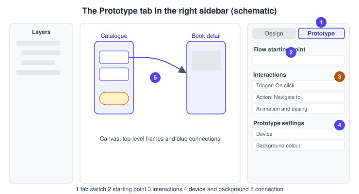
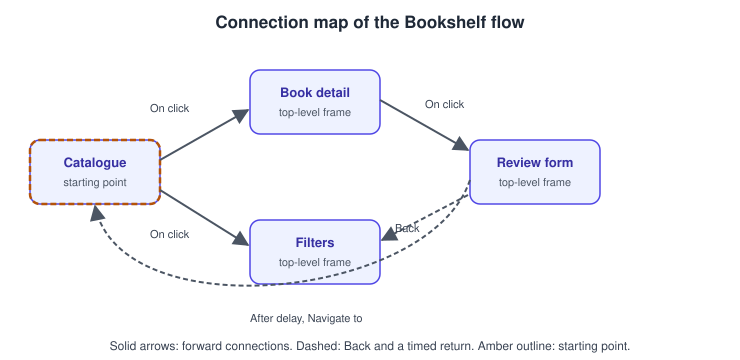
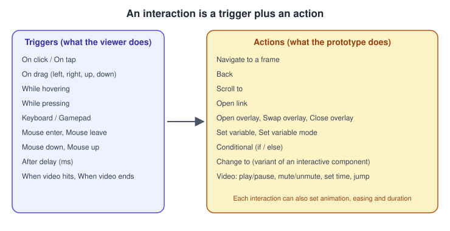
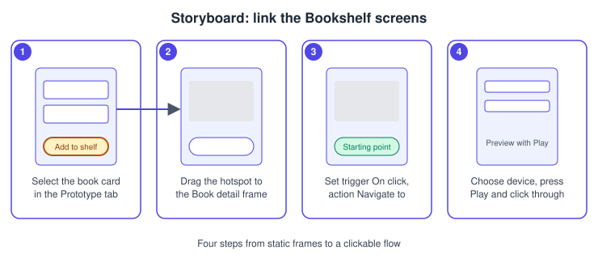

Prototyping Basics
|
This content was generated with the assistance of AI and should be verified against the official documentation before being relied on in production. |
This page was checked against the official Figma documentation on 2026-10-30 and describes the UI3 interface of Figma Design. Prototyping is available on all plans, and building interactions needs edit access to the file, which in practice means a Full seat. People who only want to play a prototype can do so with view access. Prototype interactions are generally available; the more advanced features (variables, conditionals, Smart Animate and Figma Motion) have their own pages and are only named here.
The running example is the Bookshelf app. You have drawn the catalogue, book detail and review screens as top-level frames (see Frames, Groups and Sections). A prototype turns those static frames into a clickable flow, so you can test the navigation before any code exists.
The model
-
Frame: a top-level frame is a screen. Prototype connections can only point to top-level frames, not to objects nested inside a frame.
-
Hotspot: any layer inside a frame that you select to attach an interaction to, such as the "Add to shelf" button.
-
Connection: the blue connector you drag from a hotspot to a destination frame.
-
Interaction: a trigger (what the viewer does), an action (what the prototype does) and, where it applies, an animation.
-
Flow: the set of frames and connections reachable from one starting point. A page can hold several flows.

Where it lives in UI3 and the shortcuts
Open the Prototype tab at the top of the right sidebar (next to Design). Pressing Shift E toggles between the Design and Prototype tabs. In the Prototype tab, selecting a frame or layer shows the Interactions section, the Flow starting point section, and the prototype settings (device and background). The Present control at the top of the editor opens the prototype in presentation view. The exact keyboard shortcut for playing a prototype can change, so check the shortcut list of your app instead of relying on a memorised one.
Flows and starting points
A flow is the set of frames and connections on one page, and you can keep several flows on one page, for example "Browse" and "Leave a review". Figma creates a starting point automatically when you add the first connection to a frame. You can also add one from the Flow starting point section of the right sidebar, from the right-click menu of a frame, or by duplicating a frame that already has one. A top-level frame can belong to several flows but can have only one starting point. The starting point decides which frame is shown first when the prototype is played, and you can copy a link to a single starting point to share just that flow.
Connections and hotspots
Select a hotspot, then drag the connection handle to the destination frame. Figma draws a blue connector from the hotspot to that frame. You can select several hotspots and connect them to the same destination in one drag.

Triggers
A trigger is the event that fires an interaction. A hotspot can have several interactions with different triggers. The official list is:
| Trigger | Notes |
|---|---|
On click / On tap |
The default; click on desktop, tap on touch devices |
On drag |
Options: Left, Right, Up, Down |
While hovering |
Active while the pointer is over the layer |
While pressing |
Active while the pointer or finger is held down |
Keyboard / Gamepad |
A single key or button, or a combination such as Shift and K |
Mouse enter, Mouse leave |
Pointer moves onto or off the layer |
Mouse down (touch down), Mouse up (touch up) |
Pressing and releasing |
After delay |
Duration in milliseconds, useful for splash screens and toasts |
When video hits, When video ends |
For video layers; the first takes a timestamp |
Older files may still show the labels "Mouse move inside" and "Mouse move outside". These were created before 2023-11-16, cannot be created any more, and correspond to the Mouse enter and Mouse leave behaviour of today’s list. Older guides that name the previous labels are therefore out of date.
Source: Figma Learn: Prototype triggers
Actions
The action is what happens when the trigger fires. The official list is:
| Action | What it does |
|---|---|
Navigate to |
Moves to another top-level frame |
Back |
Returns to the previous screen of the viewing session |
Scroll to |
Scrolls to a layer, with Instant or Animate (optionally with easing) |
Open link |
Opens a URL in a new tab; for external sites a checkbox can skip the leaving-Figma notice |
Open overlay, Swap overlay, Close overlay |
Show, replace or dismiss a frame above the current one |
Set variable, Set variable mode, Conditional |
Hold state, change the mode of a page, or branch with if and else |
Change to |
Switches the variant of an interactive component |
Video actions |
Play/pause, mute/unmute, set to a specific time, jump forward or backward |

Source: Figma Learn: Prototype actions
Overlays, scrolling and variables are large topics of their own: see Overlays, Scrolling and Fixed Elements, Interactive Components and Microinteractions and Advanced Prototyping with Variables. The animation applied when navigating, including Smart Animate, easing and springs, is covered on Transitions, Easing and Springs and Smart Animate.
Device and background settings
With nothing selected in the Prototype tab, the right sidebar shows the prototype settings. Choose a device and model so the preview is framed like a real phone, tablet or desktop, and set the background colour that shows around the frame. The orientation applies to the whole prototype: you cannot switch between portrait and landscape within one prototype, so make separate flows or files for each. Which device presets exist changes over time, so pick the closest match to your frame size.
Procedure: link the Bookshelf screens
-
Open the Bookshelf file and make sure the Catalogue, Book detail and Review form screens are top-level frames with clear names.
-
Select the Catalogue frame, then press
Shift E(or click Prototype) to open the Prototype tab. -
Select the first book card on the Catalogue frame. A small connection handle appears at its edge.
-
Drag the handle onto the Book detail frame. Figma draws a blue connector and, because it is the first connection, creates a starting point on the Catalogue frame.
-
In the Interactions section, confirm the trigger is On click and the action is Navigate to Book detail. Leave the animation as Instant for now.
-
Select the "Add to shelf" button on the Book detail frame, drag a connection to the Review form frame, and keep On click and Navigate to.
-
On the Review form frame, select the back arrow in the top bar and add an interaction with action Back.
-
With no layer selected, open the prototype settings and choose a phone device and a background colour.
-
Press the Present control (or open the preview) and click through the flow. Fix any missing connection and repeat.

Procedure: add a timed return
-
Select the Review form frame itself, not a layer inside it.
-
In the Interactions section, add an interaction.
-
Set the trigger to After delay and the delay to a value in milliseconds, for example 1500.
-
Set the action to Navigate to and choose the Catalogue frame.
-
Preview: the Review form returns to the Catalogue by itself after the delay.
Source: Figma Learn: Prototype triggers
Previewing, presenting and sharing
Play the prototype in presentation view from the editor; presentation view has its own options, described in the official article on presentation view options. To share it, use the Share button and copy the link to the whole prototype, or copy the link to a single flow starting point so that the viewer begins at that flow. Viewers can leave comments on a played prototype, and the prototype can be opened on a phone with the Figma mobile app. The detailed options, permissions and testing workflow are on Presenting and Testing Prototypes.
Common mistakes
-
Pointing a connection at a nested object. The destination must be a top-level frame.
-
Forgetting that a frame has only one starting point: a second starting point on the same frame is not possible, so duplicate the frame or restructure the flow.
-
Mixing orientations in one prototype. Orientation is per prototype.
-
Relying on hover triggers for touch devices. Prefer On tap or On click for anything essential.
-
Leaving the trigger on the default when two interactions on one layer overlap; give each interaction a distinct trigger.
Where older guides are outdated
-
The trigger labels "Mouse move inside" and "Mouse move outside" were replaced by Mouse enter and Mouse leave; the old labels cannot be created since 2023-11-16, and video triggers now exist.
-
Guides written for the previous interface describe a top toolbar and an older properties panel. UI3 has been the only interface since 2025-04-30, and the Prototype tab of the right sidebar is where interactions are set.
-
Guides that present interactive components or conditional logic as new features predate their general availability; the later pages in this sub-section cover them.
-
The mobile app Mirror flow described in older guides has changed with the current Figma mobile app, so follow the current official article rather than a book.
Source: Figma Learn: Prototype triggers